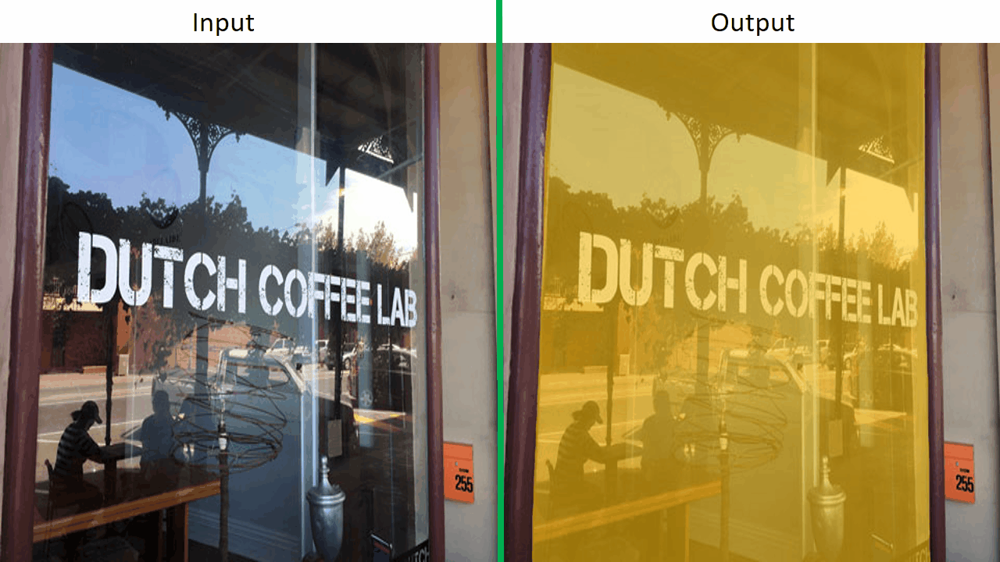
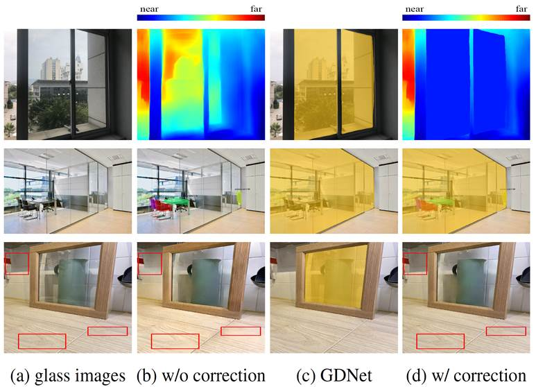
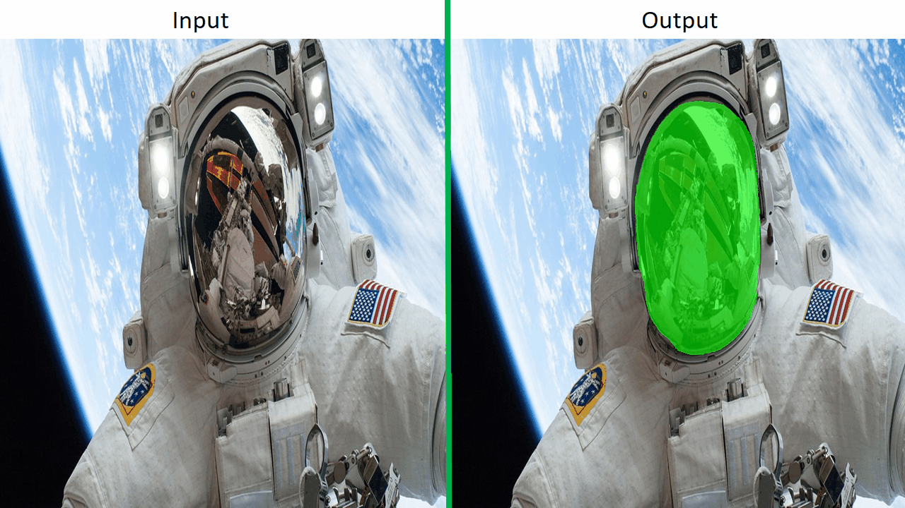
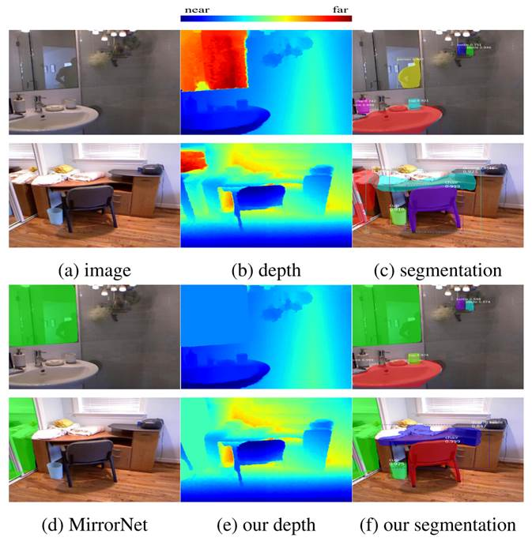

|
Mirror and Glass Detection/Segmentation
|
|
In this project, we are developing techniques for mirror or
glass detection and segmentation. Here, we refer to mirrors
as reflective surfaces, and glass as transparent surfaces.
In general, both mirrors and glass do not have their own
appearances. They only convey the appearances of their
surrounding. While mirrors reflect the appearances of the
front side of them, glass transmits the appearances of the
back side of it and often also reflects the appearances of
the front side of it.
As both mirrors and glass do not have their own
appearances, it is very difficult to detect and segment
them. However, as they appear everywhere in our daily life,
it can be problematic if we are not able to detect them
reliably. For example, a depth sensor may falsely estimate
the depth of a piece of mirror/glass, an autonomous car may
not be aware of the existence of a glass building, and a
drone may collide into a high rise (noted that most high
rises are covered by glass these days).
As far as we know, my team is the first to develop
computational methods for automatic detection and
segmentation of mirrors and transparent glass. Although
there have been some works that investigate the detection of
transparent glass, these methods mainly focus on detecting
wine glass and small glass objects, which have some special
properties that can be used for detection. Unlike these
works, we are more interested on detecting general glass
regions that may not possess any special properties of their
own.
We are particularly interested in exploring the application
of our mirror/glass detection methods in autonomous
navigation.
|
|
Don't Hit Me! Glass Detection in Real-world
Scenes
[paper] [suppl] [code] [dataset]
Haiyang Mei, Xin Yang*, Yang Wang, Yuanyuan Liu,
Shengfeng He, Qiang Zhang, Xiaopeng Wei, and Rynson
Lau
Proc. IEEE CVPR (CCF A), June 2020
|

|

Problems with glass in existing vision
tasks. In depth prediction, existing
method [16] wrongly predicts the depth of
the scene behind the glass, instead of the
depth to the glass (1st row of (b)). For
instance segmentation, Mask RCNN [9] only
segments the instances behind the glass,
not aware that they are actually behind
the glass (2nd row of (b)). Besides, if we
directly apply an existing singe-image
reflection removal (SIRR) method [36] to
an image that is only partially covered by
glass, the non-glass region can be
corrupted (3rd row of (b)). GDNet can
detect the glass (c) and then correct
these failure cases (d).
|
|
|
Input-Output:
Given an input image, our network outputs a binary
mask that indicate where transparent glass regions
are.
Abstract.
Transparent glass is very common in our daily life.
Existing computer vision systems neglect it and thus
may have severe consequences, e.g., a robot may
crash into a glass wall. However, sensing the
presence of glass is not straightforward. The key
challenge is that arbitrary objects/scenes can
appear behind the glass, and the content within the
glass region is typically similar to those behind
it. In this paper, we propose an important problem
of detecting glass from a single RGB image. To
address this problem, we construct a large-scale
glass detection dataset (GDD) and design a glass
detection network, called GDNet, which explores
abundant contextual cues for robust glass detection
with a novel large-field contextual feature
integration (LCFI) module. Extensive experiments
demonstrate that the proposed method achieves more
superior glass detection results on our GDD test set
than state-of-the-art methods fine-tuned for glass
detection.
|
|
|
Where is My Mirror?
[paper] [suppl] [code and updated results] [dataset] [media]
Xin Yang*, Haiyang Mei*, Ke Xu, Xiaopeng Wei,
Baocai Yin, and Rynson Lau (* joint first authors)
Proc. IEEE ICCV (CCF A), Oct. 2019
|

|

Problems with mirrors in existing vision
tasks. In depth prediction, NYU-v2 dataset
[32] uses a Kinect to capture depth as
ground truth. It wrongly predicts the
depths of the reflected contents, instead
of the mirror depths (b). In instance
semantic segmentation, Mask RCNN [12]
wrongly detects objects inside the mirrors
(c). With MirrorNet, we first detect and
mask out the mirrors (d). We then obtain
the correct depths (e), by interpolating
the depths from surrounding pixels of the
mirrors, and segmentation maps (f).
|
|
|
Input-Output:
Given an input image, our network outputs a binary
mask that indicate where mirrors are.
Abstract.
Mirrors are everywhere in our daily lives. Existing
computer vision systems do not consider mirrors, and
hence may get confused by the reflected content
inside a mirror, resulting in a severe performance
degradation. However, separating the real content
outside a mirror from the reflected content inside
it is non-trivial. The key challenge is that mirrors
typically reflect contents similar to their
surroundings, making it very difficult to
differentiate the two. In this paper, we present a
novel method to segment mirrors from an input image.
To the best of our knowledge, this is the first work
to address the mirror segmentation problem with a
computational approach. We make the following
contributions. First, we construct a large-scale
mirror dataset that contains mirror images with
corresponding manually annotated masks. This dataset
covers a variety of daily life scenes, and will be
made publicly available for future research. Second,
we propose a novel network, called MirrorNet, for
mirror segmentation, by modeling both semantical and
low-level color/texture discontinuities between the
contents inside and outside of the mirrors. Third,
we conduct extensive experiments to evaluate the
proposed method, and show that it outperforms the
carefully chosen baselines from the state-of-the-art
detection and segmentation methods
|
|